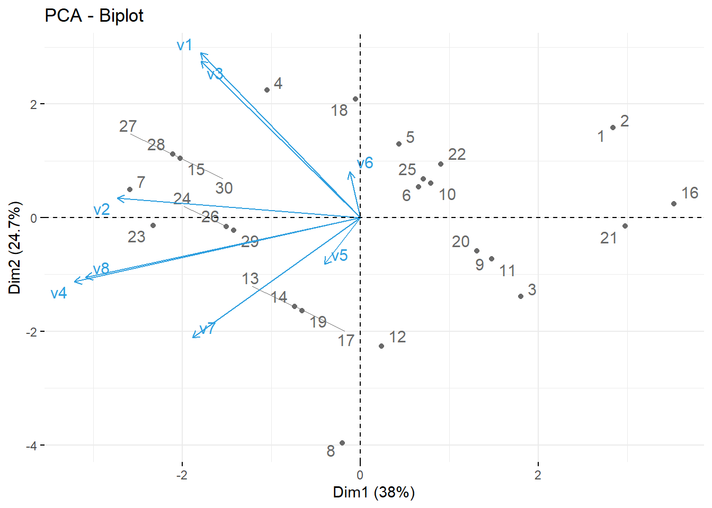
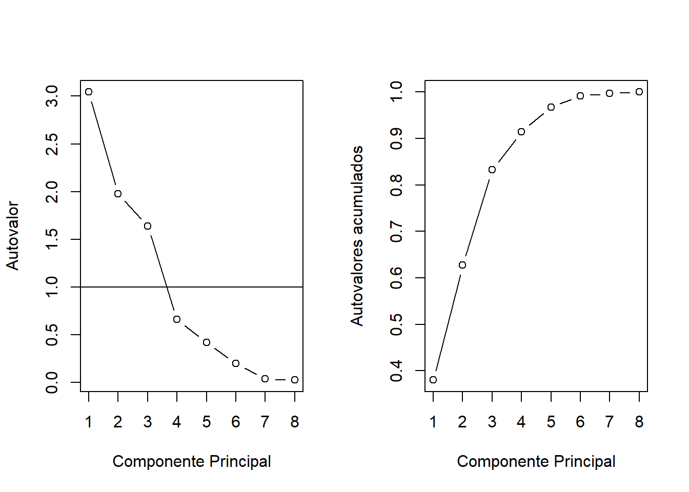
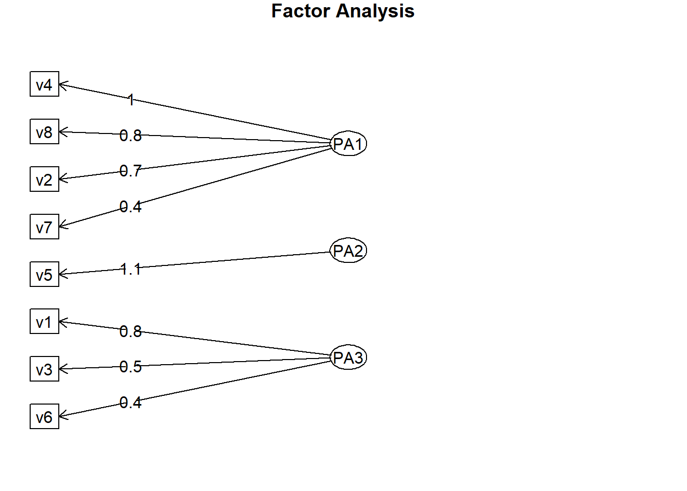

Rodando um modelo de Análise Fatorial no R
Rodrigo H. Ozon
17/09/2020
Resumo
Neste tutorial rodaremos uma análise fatorial com base no exercício resolvido disponível em Corrar et alli (2009, p. 119-125), utilizando o software R, que segundo o IBPAD (2020):
“O R é uma linguagem e ambiente para análise estatística e produção de gráficos, um projeto GNU semelhante a linguagem S, foi desenvolvido pelos estatísticos Ross Ihaka e Robert Gentleman na década de 90 quando precisavam utilizar programas pagos em seus projetos. R oferece uma grande variedade de estatísticas (modelagem linear e não-linear, testes estatísticos clássicos, análise de séries temporais, classificação, agrupamento, etc.) e técnicas gráficas extensíveis, que fornecem uma rota de código aberto para que haja participações entre programadores.”
Durante a década passada, o uso da técnica estatística multivariada de análise fatorial aumentou em todas as áreas de pesquisa relacionadas a negócios. À medida que o número de variáveis a serem consideradas em técnicas multivariadas aumenta, há uma necessidade proporcional de maior conhecimento da estrutura e das inter-relações das variáveis.
Palavras-chave: Análise Fatorial, R
Exercício resolvido
Uma empresa do ramo de calçados populares gostaria de entender melhor a forma de relacionamento de algumas variáveis e como esse relacionamento pode interferir na condução de seu negócio. Para isso, resolveu encomendar uma pesquisa com outras empresas do ramo para identificar a importância de algumas variáveis.
As variáveis que fizeram parte da pesquisa foram:
- v1\(\Rightarrow\) Automação
- v2\(\Rightarrow\) Crescimento do PIB
- v3\(\Rightarrow\) Parceria com os fornecedores
- v4\(\Rightarrow\) Novos concorrentes
- v5\(\Rightarrow\) Diversidade de produtos
- v6\(\Rightarrow\) Controle de despesas
- v7\(\Rightarrow\) Câmbio
- v8\(\Rightarrow\) Estabilidade econômica
A pesquisa era respondida por uma escala de concordância:
1 \(\Rightarrow\) Não interfere
2 \(\Rightarrow\) Interfere pouco
3 \(\Rightarrow\) Interfere
4 \(\Rightarrow\) Interfere muito
5 \(\Rightarrow\) Fundamental
Os resultados da pesquisa foram:
library(readxl)
url<-"https://github.com/rhozon/Introdu-o-Econometria-com-Excel/blob/master/AnaliseFatorial.xlsx?raw=true"
dados <- tempfile()
download.file(url, dados, mode="wb")
dados<-read_excel(path = dados, sheet = 1)
library(knitr)
library(kableExtra)
kbl(cbind(dados)) %>%
kable_paper() %>%
scroll_box(width = "800px", height = "200px")| Empresas | v1 | v2 | v3 | v4 | v5 | v6 | v7 | v8 |
|---|---|---|---|---|---|---|---|---|
| C1 | 4 | 1 | 2 | 2 | 2 | 4 | 1 | 3 |
| C2 | 4 | 1 | 2 | 2 | 2 | 4 | 1 | 3 |
| C3 | 2 | 2 | 1 | 3 | 1 | 3 | 2 | 4 |
| C4 | 5 | 4 | 3 | 3 | 3 | 5 | 2 | 4 |
| C5 | 4 | 2 | 3 | 3 | 1 | 3 | 2 | 4 |
| C6 | 4 | 2 | 2 | 3 | 3 | 4 | 2 | 4 |
| C7 | 5 | 3 | 3 | 4 | 5 | 5 | 4 | 5 |
| C8 | 2 | 1 | 1 | 4 | 6 | 3 | 5 | 5 |
| C9 | 3 | 2 | 1 | 3 | 3 | 5 | 2 | 4 |
| C10 | 4 | 2 | 2 | 3 | 1 | 3 | 2 | 4 |
| C11 | 3 | 2 | 1 | 3 | 1 | 3 | 2 | 4 |
| C12 | 3 | 2 | 1 | 3 | 2 | 4 | 6 | 4 |
| C13 | 3 | 3 | 1 | 4 | 2 | 4 | 3 | 5 |
| C14 | 3 | 3 | 1 | 4 | 2 | 4 | 3 | 5 |
| C15 | 5 | 3 | 3 | 4 | 1 | 3 | 3 | 5 |
| C16 | 3 | 1 | 1 | 2 | 2 | 4 | 1 | 3 |
| C17 | 3 | 3 | 1 | 4 | 2 | 4 | 3 | 5 |
| C18 | 5 | 2 | 3 | 3 | 3 | 5 | 2 | 4 |
| C19 | 3 | 3 | 1 | 4 | 1 | 3 | 3 | 5 |
| C20 | 3 | 2 | 1 | 3 | 3 | 5 | 2 | 4 |
| C21 | 3 | 2 | 1 | 2 | 3 | 5 | 3 | 2 |
| C22 | 4 | 3 | 2 | 3 | 1 | 3 | 2 | 3 |
| C23 | 4 | 5 | 2 | 4 | 1 | 3 | 3 | 5 |
| C24 | 4 | 3 | 2 | 4 | 3 | 5 | 3 | 5 |
| C25 | 4 | 2 | 2 | 3 | 2 | 4 | 2 | 4 |
| C26 | 4 | 3 | 2 | 4 | 3 | 5 | 3 | 5 |
| C27 | 5 | 3 | 3 | 4 | 2 | 4 | 3 | 5 |
| C28 | 5 | 3 | 3 | 4 | 2 | 4 | 3 | 5 |
| C29 | 4 | 3 | 2 | 4 | 2 | 4 | 3 | 5 |
| C30 | 5 | 3 | 3 | 4 | 2 | 4 | 3 | 5 |
Pede-se:
- Faça uma AF e avalie se o seu resultado (teste de esfericidade, KMO e KMO individual, total de variância explicada e comunalidades) e comente sobre a aderência da referida técnica à solução deste caso.
Resposta:
Para diferenciarmos, partimos com a conceituação entre os métodos:
Análise de Componentes Principais (PCA) O PCA decompõe uma matriz de correlação com outras nas diagonais. A quantidade de variância é igual ao traço da matriz, a soma das diagonais ou o número de variáveis observadas na análise. PCA minimiza a soma da distância perpendicular quadrada ao eixo do componente. Os componentes são ininterpretáveis, por exemplo, nenhuma construção subjacente.
Os componentes principais extraídos são responsáveis por uma quantidade máxima de variância. A pontuação do componente é uma combinação linear de variáveis observadas ponderadas por vetores próprios.
Análise exploratória de fatores (EFA) decompõe uma matriz de correlação ajustada. As diagonais foram ajustadas para os fatores únicos. A quantidade de variância explicada é igual ao traço da matriz, a soma das diagonais ajustadas ou comunalidades. Os fatores são responsáveis pela variação comum em um conjunto de dados. As correlações múltiplas ao quadrado (SMC) são usadas como estimativas de comunalidade nas diagonais. As variáveis observadas são uma combinação linear dos fatores subjacentes e únicos.
O primeiro passo consiste na avaliação dos padrões de distribuição de probabilidades presentes nos dados:
library(tidyverse)
dados<-as_tibble(dados) #primeiro selecionamos as variaveis que queremos...
dados## # A tibble: 30 x 9
## Empresas v1 v2 v3 v4 v5 v6 v7 v8
## <chr> <dbl> <dbl> <dbl> <dbl> <dbl> <dbl> <dbl> <dbl>
## 1 C1 4 1 2 2 2 4 1 3
## 2 C2 4 1 2 2 2 4 1 3
## 3 C3 2 2 1 3 1 3 2 4
## 4 C4 5 4 3 3 3 5 2 4
## 5 C5 4 2 3 3 1 3 2 4
## 6 C6 4 2 2 3 3 4 2 4
## 7 C7 5 3 3 4 5 5 4 5
## 8 C8 2 1 1 4 6 3 5 5
## 9 C9 3 2 1 3 3 5 2 4
## 10 C10 4 2 2 3 1 3 2 4
## # ... with 20 more rows#teremos que retirar a primeira coluna pelo fato de nao ser numerica
#O teste de Shapiro-Wilk avalia a condição de normalidade
shapiro.test(dados$v1)##
## Shapiro-Wilk normality test
##
## data: dados$v1
## W = 0.87265, p-value = 0.00192shapiro.test(dados$v2)##
## Shapiro-Wilk normality test
##
## data: dados$v2
## W = 0.86505, p-value = 0.001303shapiro.test(dados$v3)##
## Shapiro-Wilk normality test
##
## data: dados$v3
## W = 0.79004, p-value = 4.34e-05shapiro.test(dados$v4)##
## Shapiro-Wilk normality test
##
## data: dados$v4
## W = 0.7717, p-value = 2.084e-05shapiro.test(dados$v5)##
## Shapiro-Wilk normality test
##
## data: dados$v5
## W = 0.81026, p-value = 0.0001014shapiro.test(dados$v6)##
## Shapiro-Wilk normality test
##
## data: dados$v6
## W = 0.81129, p-value = 0.000106shapiro.test(dados$v7)##
## Shapiro-Wilk normality test
##
## data: dados$v7
## W = 0.83574, p-value = 0.0003162shapiro.test(dados$v8)##
## Shapiro-Wilk normality test
##
## data: dados$v8
## W = 0.79314, p-value = 4.929e-05Neste teste se o valor \(p> 0,05\) sabemos que a distribuição dos dados não é significativamente diferente da distribuição normal. Em outras palavras, podemos assumir a normalidade. Como vemos, nenhuma delas possui distribuição normal.
Veremos mais nitidamente com os histogramas:
par(mfrow=(c(2,2)))
hist(dados$v1)
hist(dados$v2)
hist(dados$v3)
hist(dados$v4)
hist(dados$v5)
hist(dados$v6)
hist(dados$v7)
hist(dados$v8)
Isso sugere que deveríamos transformar as variáveis antes da aplicação do PCA. Visto que a assimetria e a magnitude das variáveis influenciam os componentes resultantes, é uma boa prática aplicar a transformação de assimetria, centralizar e dimensionar as variáveis antes da aplicação da Análise de Componentes Principais.
Aqui, poderíamos, p. ex. aplicar uma transformação de log às variáveis, ou então ter sido mais geral e aplicado uma transformação de Box e Cox. Por ora, manteremos as variáveis sem transformação, pela característica da pesquisa.
Na verdade, um pouco de multicolinearidade é desejável, pois o objetivo é identificar conjuntos de variáveis inter-relacionadas. Assumindo que o pesquisador atende as exigências conceituais para as variáveis incluídas na análise, o próximo passo é garantir que as variáveis são suficientemente correlacionadas umas com as outras para produzir fatores representativos. (Hair et. alli, p. 109, 2009)
Vamos ver a matriz de correlação:
library(dplyr) #pacote para select e para o operador pipe
variaveisX<-dados%>%
select(-Empresas)
as.tibble(cor(round(variaveisX,2)))## Warning: `as.tibble()` is deprecated as of tibble 2.0.0.
## Please use `as_tibble()` instead.
## The signature and semantics have changed, see `?as_tibble`.
## This warning is displayed once every 8 hours.
## Call `lifecycle::last_warnings()` to see where this warning was generated.## # A tibble: 8 x 8
## v1 v2 v3 v4 v5 v6 v7 v8
## <dbl> <dbl> <dbl> <dbl> <dbl> <dbl> <dbl> <dbl>
## 1 1 0.396 0.941 0.180 -0.0451 0.239 -0.129 0.179
## 2 0.396 1 0.321 0.665 -0.206 0.0234 0.256 0.568
## 3 0.941 0.321 1 0.197 -0.00241 0.103 -0.0974 0.207
## 4 0.180 0.665 0.197 1 0.111 -0.106 0.576 0.957
## 5 -0.0451 -0.206 -0.00241 0.111 1 0.551 0.377 0.112
## 6 0.239 0.0234 0.103 -0.106 0.551 1 -0.0155 -0.0944
## 7 -0.129 0.256 -0.0974 0.576 0.377 -0.0155 1 0.505
## 8 0.179 0.568 0.207 0.957 0.112 -0.0944 0.505 1Para rodarmos o KMO (do pacote psych) precisamos organizar o dataset declarando quais são as variáveis quanti que devemos empregar o teste
kbl(cbind(variaveisX)) %>%
kable_paper() %>%
scroll_box(width = "800px", height = "200px")| v1 | v2 | v3 | v4 | v5 | v6 | v7 | v8 |
|---|---|---|---|---|---|---|---|
| 4 | 1 | 2 | 2 | 2 | 4 | 1 | 3 |
| 4 | 1 | 2 | 2 | 2 | 4 | 1 | 3 |
| 2 | 2 | 1 | 3 | 1 | 3 | 2 | 4 |
| 5 | 4 | 3 | 3 | 3 | 5 | 2 | 4 |
| 4 | 2 | 3 | 3 | 1 | 3 | 2 | 4 |
| 4 | 2 | 2 | 3 | 3 | 4 | 2 | 4 |
| 5 | 3 | 3 | 4 | 5 | 5 | 4 | 5 |
| 2 | 1 | 1 | 4 | 6 | 3 | 5 | 5 |
| 3 | 2 | 1 | 3 | 3 | 5 | 2 | 4 |
| 4 | 2 | 2 | 3 | 1 | 3 | 2 | 4 |
| 3 | 2 | 1 | 3 | 1 | 3 | 2 | 4 |
| 3 | 2 | 1 | 3 | 2 | 4 | 6 | 4 |
| 3 | 3 | 1 | 4 | 2 | 4 | 3 | 5 |
| 3 | 3 | 1 | 4 | 2 | 4 | 3 | 5 |
| 5 | 3 | 3 | 4 | 1 | 3 | 3 | 5 |
| 3 | 1 | 1 | 2 | 2 | 4 | 1 | 3 |
| 3 | 3 | 1 | 4 | 2 | 4 | 3 | 5 |
| 5 | 2 | 3 | 3 | 3 | 5 | 2 | 4 |
| 3 | 3 | 1 | 4 | 1 | 3 | 3 | 5 |
| 3 | 2 | 1 | 3 | 3 | 5 | 2 | 4 |
| 3 | 2 | 1 | 2 | 3 | 5 | 3 | 2 |
| 4 | 3 | 2 | 3 | 1 | 3 | 2 | 3 |
| 4 | 5 | 2 | 4 | 1 | 3 | 3 | 5 |
| 4 | 3 | 2 | 4 | 3 | 5 | 3 | 5 |
| 4 | 2 | 2 | 3 | 2 | 4 | 2 | 4 |
| 4 | 3 | 2 | 4 | 3 | 5 | 3 | 5 |
| 5 | 3 | 3 | 4 | 2 | 4 | 3 | 5 |
| 5 | 3 | 3 | 4 | 2 | 4 | 3 | 5 |
| 4 | 3 | 2 | 4 | 2 | 4 | 3 | 5 |
| 5 | 3 | 3 | 4 | 2 | 4 | 3 | 5 |
Então rodamos o teste:
library(psych)
KMO(variaveisX)## Kaiser-Meyer-Olkin factor adequacy
## Call: KMO(r = variaveisX)
## Overall MSA = 0.49
## MSA for each item =
## v1 v2 v3 v4 v5 v6 v7 v8
## 0.47 0.59 0.45 0.56 0.30 0.23 0.74 0.59Utilizando o critério de interpretação para o KMO: veja mais detalhes aqui
- 0,00 a 0,49 inaceitável.
- 0,50 a 0,59 miserável.
- 0,60 a 0,69 medíocre.
- 0,70 a 0,79 mediano.
- 0,80 a 0,89 meritório.
- 0,90 a 1,00 maravilhoso.
Teste de esfericidade de Bartlett: Para verificar se a redução de dados é possível, esse é um estatístico da significância geral de todas as correlações em uma matriz de correlação.
Outro teste deve ser feito para determinar se as medidas dependentes são significativamente correlacionadas. O teste mais empregado para esta finalidade é o teste de esfericidade de Bartlett. Ele examina as correlações entre todas as variáveis dependentes e avalia se, coletivamente, existe inter-correlação significante (…). Isso apóia os resultados de teste de igualdade das matrizes de variância-covariância entre grupos. <>
A hipótese nula é que a redução da dimensão dos dados não é possível. Se o valor \(p\) for menor que 0,05, a redução da dimensão é possível.
print(cortest.bartlett(cor(variaveisX), nrow(variaveisX)))## $chisq
## [1] 192.5975
##
## $p.value
## [1] 1.70985e-26
##
## $df
## [1] 28O significado deste teste nos diz que a matriz de correlação não é uma matriz de identidade. Portanto, assumimos que existe alguma relação entre a variável.
PCA usando prcomp()
As funções prcomp() usam a decomposição de valor singular (a decomposição de valor singular examina as covariâncias / correlações entre os indivíduos).
Argumentos para prcomp():
- x: uma matriz numérica ou conjunto de dados numéricos
- escala: um valor lógico que indica se as variáveis devem ser escaladas para ter variância de unidade antes que a análise ocorra.
pca<-prcomp(variaveisX, scale=T)
pca## Standard deviations (1, .., p=8):
## [1] 1.7445330 1.4059408 1.2802016 0.8116653 0.6483191 0.4461810 0.1898462
## [8] 0.1636505
##
## Rotation (n x k) = (8 x 8):
## PC1 PC2 PC3 PC4 PC5 PC6
## v1 -0.29320130 0.58928115 -0.07620581 0.15253484 -0.10956521 0.14503054
## v2 -0.44595013 0.06936536 0.18684385 -0.58351499 -0.33625240 -0.52717628
## v3 -0.29299857 0.55920794 -0.04943284 0.38927497 -0.02815767 -0.06296442
## v4 -0.52477297 -0.22911475 0.07165964 -0.02514016 0.27931567 0.04296166
## v5 -0.06634833 -0.16654739 -0.70056041 0.24783638 0.18759031 -0.59915738
## v6 -0.01930093 0.16320981 -0.65024253 -0.57052908 -0.00129148 0.43472333
## v7 -0.30826462 -0.42750381 -0.18468412 0.31054153 -0.71516225 0.27435470
## v8 -0.50410807 -0.21352773 0.06320507 0.02672102 0.49947058 0.26832191
## PC7 PC8
## v1 0.68700786 0.18079912
## v2 -0.08197427 0.15236888
## v3 -0.63923204 -0.18462053
## v4 0.21500349 -0.73502597
## v5 0.11396599 0.09210957
## v6 -0.15869449 -0.10247569
## v7 -0.04125614 0.05691691
## v8 -0.16304006 0.58951040A saída retorna o desvio padrão de cada um dos quatro PCs e sua rotação (ou cargas), que são os coeficientes das combinações lineares das variáveis contínuas.
Vamos plotar o gráfico que descreve o resultado da PCA:
biplot(pca, scale = 0)
abline(h=0,v=0)Análise de Componentes Principais: Variância
Identificamos os componentes que explicam a maior parcela de variância:
plot(pca,type="lines")
abline(h=1, col="blue")O método plot retorna um gráfico das variâncias (eixo y) associadas aos PCs ou componentes principais (eixo x).
O gráfico é útil para decidir quantos componentes reter para análise posterior. Neste caso simples, com 8 componentes, esta não é uma tarefa difícil e podemos ver que os primeiros três componentes explicam a maior parte da variabilidade nos dados, pois na medida em que o valor da variância explicada se mostrar inferior a 1, descartamos sua inclusão em nosso modelo fatorial.
summary(pca)## Importance of components:
## PC1 PC2 PC3 PC4 PC5 PC6 PC7
## Standard deviation 1.7445 1.4059 1.2802 0.81167 0.64832 0.44618 0.18985
## Proportion of Variance 0.3804 0.2471 0.2049 0.08235 0.05254 0.02488 0.00451
## Cumulative Proportion 0.3804 0.6275 0.8324 0.91472 0.96726 0.99215 0.99665
## PC8
## Standard deviation 0.16365
## Proportion of Variance 0.00335
## Cumulative Proportion 1.00000A função summary descreve a importância dos componentes.
- A primeira linha descreve o desvio padrão associado a cada componente.
- A segunda linha mostra a proporção da variação nos dados explicada por cada componente.
- A terceira linha descreve a proporção cumulativa da variância explicada.
Podemos ver ali que os primeiros três componentes respondem por mais de 83% da variância dos dados.
Veremos a porcentagem de variações explicadas por cada componente principal:
library(factoextra)
fviz_eig(pca)
Fatores suficientes para atender um percentual especificado de variância explicada, geralmente 60% ou mais
Fatores apontados pelo teste scree como tendo quantias substanciais de variância comum (i.e., fatores antes do ponto de inflexão)Agora visualizamos as contribuições individuais em cada componente:
fviz_pca_ind(pca,
col.ind = "cos2", # Cores pela qualidade da representatividade
gradient.cols = c("#00AFBB", "#E7B800", "#FC4E07"),
repel = TRUE # Evite a sobreposição de texto
)
Variáveis correlacionadas positivamente apontam para o mesmo lado do gráfico.
Variáveis correlacionadas negativamente apontam para lados opostos do gráfico.
fviz_pca_var(pca,
col.var = "contrib", # Cores pela contribuicao da componente
gradient.cols = c("#00AFBB", "#E7B800", "#FC4E07"),
repel = TRUE # Evite a sobreposição de texto
)Biplot das variáveis individuais
fviz_pca_biplot(pca, repel = TRUE,
col.var = "#2E9FDF", # Cores das variavesi
col.ind = "#696969" # Cores individuais
)
Usando a função de predict para prever os componentes principais para os novos dados.
#Componentes das dez ultimas linhas (empresas) da pesquisa
PC1<-predict(pca, newdata=tail(variaveisX, 2))
as.tibble(PC1) ## # A tibble: 2 x 8
## PC1 PC2 PC3 PC4 PC5 PC6 PC7 PC8
## <dbl> <dbl> <dbl> <dbl> <dbl> <dbl> <dbl> <dbl>
## 1 -1.42 -0.225 0.255 -0.211 0.188 0.226 0.0391 -0.0628
## 2 -2.10 1.11 0.109 0.435 0.0320 0.311 0.0243 -0.0867Decomposição de valores únicos
A decomposição de valores únicos pode ser pensada como um método que transforma variáveis correlacionadas em um conjunto de variáveis não correlacionadas, permitindo analisar melhor as relações dos dados originais.
- Descubra os valores próprios e vetores próprios da matriz de correlação dos dados.
- Os vetores próprios são ortogonais entre si.
- O primeiro vetor próprio aponta na direção da variância máxima presente nos dados.
- Segundo vetor próprio na próxima direção máxima e assim por diante.
- Valores próprios (variância explicada por um componente) e vetores próprios (direção onde a variância máxima é explicada)
correldados<-cor(variaveisX)
as.tibble(correldados)## # A tibble: 8 x 8
## v1 v2 v3 v4 v5 v6 v7 v8
## <dbl> <dbl> <dbl> <dbl> <dbl> <dbl> <dbl> <dbl>
## 1 1 0.396 0.941 0.180 -0.0451 0.239 -0.129 0.179
## 2 0.396 1 0.321 0.665 -0.206 0.0234 0.256 0.568
## 3 0.941 0.321 1 0.197 -0.00241 0.103 -0.0974 0.207
## 4 0.180 0.665 0.197 1 0.111 -0.106 0.576 0.957
## 5 -0.0451 -0.206 -0.00241 0.111 1 0.551 0.377 0.112
## 6 0.239 0.0234 0.103 -0.106 0.551 1 -0.0155 -0.0944
## 7 -0.129 0.256 -0.0974 0.576 0.377 -0.0155 1 0.505
## 8 0.179 0.568 0.207 0.957 0.112 -0.0944 0.505 1autovalores<-eigen(correldados)
as.tibble(autovalores$values)## # A tibble: 8 x 1
## value
## <dbl>
## 1 3.04
## 2 1.98
## 3 1.64
## 4 0.659
## 5 0.420
## 6 0.199
## 7 0.0360
## 8 0.0268Um autovalor consiste na soma em coluna de cargas fatoriais ao quadrado para um fator; também conhecido como raiz latente. Representa a quantia de variância explicada por um fator.
Então a proporção da variância explicada será:
dados.var.prop<-autovalores$values/sum(autovalores$values)
as.tibble(dados.var.prop)## # A tibble: 8 x 1
## value
## <dbl>
## 1 0.380
## 2 0.247
## 3 0.205
## 4 0.0824
## 5 0.0525
## 6 0.0249
## 7 0.00451
## 8 0.00335A variância explicada pela primeira componente é de 38,04%
A variância explicada pela segunda componente é de 24,70%
A variância explicada pela terceira componente é de 20,48%
A variância explicada pela quarta componente é de 8,23%
A variância explicada pela quinta componente é de 5,25%
A variância explicada pela sexta componente é de 2,48%
A variância explicada pela sétima componente é de 0,4%
A variância explicada pela oitava componente é de 0,3%
Vamos aos autovetores:
as.tibble(autovalores$vectors)## Warning: The `x` argument of `as_tibble.matrix()` must have unique column names if `.name_repair` is omitted as of tibble 2.0.0.
## Using compatibility `.name_repair`.
## This warning is displayed once every 8 hours.
## Call `lifecycle::last_warnings()` to see where this warning was generated.## # A tibble: 8 x 8
## V1 V2 V3 V4 V5 V6 V7 V8
## <dbl> <dbl> <dbl> <dbl> <dbl> <dbl> <dbl> <dbl>
## 1 0.293 0.589 -0.0762 -0.153 -0.110 -0.145 0.687 0.181
## 2 0.446 0.0694 0.187 0.584 -0.336 0.527 -0.0820 0.152
## 3 0.293 0.559 -0.0494 -0.389 -0.0282 0.0630 -0.639 -0.185
## 4 0.525 -0.229 0.0717 0.0251 0.279 -0.0430 0.215 -0.735
## 5 0.0663 -0.167 -0.701 -0.248 0.188 0.599 0.114 0.0921
## 6 0.0193 0.163 -0.650 0.571 -0.00129 -0.435 -0.159 -0.102
## 7 0.308 -0.428 -0.185 -0.311 -0.715 -0.274 -0.0413 0.0569
## 8 0.504 -0.214 0.0632 -0.0267 0.499 -0.268 -0.163 0.590A saída retorna a rotação (ou cargas), que são os coeficientes das combinações lineares das variáveis.
Quantos componentes selecionar?
Scree plot é usado para nos ajudar a escolher o número de componentes que devemos selecionar, considerando a variabilidade dos dados explicados.
library(patchwork)
par(mfcol = c(1, 2))
p1<-plot(autovalores$values, xlab = "Componente Principal", ylab = "Autovalor", type = "b")
abline(h=1)
p2<-plot(cumsum(dados.var.prop), xlab = "Componente Principal", ylab = "Autovalores acumulados", type = "b")
p1+p2## integer(0)Com a análise de componentes, cada variável contribui com um valor 1 do autovalor total. Logo, apenas os fatores que têm raízes latentes ou autovalores maiores que 1 são considerados significantes; todos os fatores com raízes latentes menores que 1 são considerados insignificantes e são descartados.
PCA usando princomp()
A função princomp() usa a abordagem de decomposição espectral (a decomposição espectral examina as covariâncias / correlações entre as variáveis).
- x: uma matriz numérica ou quadro de dados
- cor: um valor lógico. Se TRUE, os dados serão centralizados e escalados antes da análise
- pontuações: um valor lógico. Se TRUE, as coordenadas em cada componente principal são calculadas
Carregamentos de componentes
Porcentagem de variância em uma variável, explicada por um componente.
pca2<-princomp(variaveisX,scores=T)
pca2$loadings##
## Loadings:
## Comp.1 Comp.2 Comp.3 Comp.4 Comp.5 Comp.6 Comp.7 Comp.8
## v1 0.207 0.418 0.495 0.217 0.122 0.122 0.672
## v2 0.378 0.364 -0.112 -0.540 0.299 -0.556 0.135
## v3 0.194 0.360 0.431 0.390 -0.691 -0.104
## v4 0.414 -0.186 -0.318 0.126 -0.805
## v5 0.326 -0.650 0.452 -0.264 -0.432
## v6 -0.185 0.428 -0.567 0.298 0.566 -0.192
## v7 0.530 -0.293 -0.311 0.412 0.583 0.157
## v8 0.458 0.109 -0.194 -0.544 0.358 0.551
##
## Comp.1 Comp.2 Comp.3 Comp.4 Comp.5 Comp.6 Comp.7 Comp.8
## SS loadings 1.000 1.000 1.000 1.000 1.000 1.000 1.000 1.000
## Proportion Var 0.125 0.125 0.125 0.125 0.125 0.125 0.125 0.125
## Cumulative Var 0.125 0.250 0.375 0.500 0.625 0.750 0.875 1.000A interpretação dessas cargas fatoriais é a seguinte:
- Cargas fatoriais na faixa de ± 0,30 a ± 0,40 são consideradas como atendendo o nível mínimo para interpretação de estrutura.
- Cargas de ± 0,50 ou maiores são tidas como praticamente significantes.
- Cargas excedendo + 0,70* são consideradas indicativas de estrutura bem definida e são a meta de qualquer análise fatorial.
Segundo Hair, et. alli (2009, p. 101):
“Cargas Fatoriais: Correlação entre as variáveis originais e os fatores, bem como a chave para o entendimento da natureza de um fator em particular. As cargas fatoriais ao quadrado indicam qual percentual da variância em uma variável original é explicado por um fator.” (Hair et. alli, p. 109, 2009)
Vamos tentar fazer isso:
cargasaoquadrado<-pca2$loadings^2
cargasaoquadrado##
## Loadings:
## Comp.1 Comp.2 Comp.3 Comp.4 Comp.5 Comp.6 Comp.7 Comp.8
## v1 0.174 0.245 0.452
## v2 0.143 0.133 0.292 0.309
## v3 0.129 0.185 0.152 0.477
## v4 0.172 0.101 0.648
## v5 0.106 0.422 0.204 0.187
## v6 0.183 0.321 0.320
## v7 0.281 0.170 0.339
## v8 0.209 0.296 0.128 0.303
##
## Comp.1 Comp.2 Comp.3 Comp.4 Comp.5 Comp.6 Comp.7 Comp.8
## SS loadings 0.187 0.252 0.182 0.243 0.234 0.251 0.434 0.513
## Proportion Var 0.023 0.031 0.023 0.030 0.029 0.031 0.054 0.064
## Cumulative Var 0.023 0.055 0.078 0.108 0.137 0.169 0.223 0.287Testando as premissas para análise fatorial
Fatorabilidade
É a suposição de que há pelo menos algumas correlações entre as variáveis para que fatores coerentes possam ser identificados. Basicamente, deve haver algum grau de colinearidade entre as variáveis, mas não um grau extremo ou singularidade entre as variáveis.
A fatorabilidade pode ser examinada por meio de qualquer um dos seguintes:
- Correlações entre itens (matriz de correlação) - existem pelo menos várias correlações consideráveis - por exemplo, > 0,5?
- Diagonais da matriz de correlação anti-imagem - devem ser> 0,5
- Medida de precisão de amostragem (MSA) usando o teste KMO
- Teste de esfericidade de Bartlett (deve ser significativo)
Matriz de Correlação
Para fazer a análise fatorial, devemos ter variáveis que se correlacionam razoavelmente bem umas com as outras. A matriz de correlação é gerada em R para verificar o padrão de relacionamento entre as variáveis.
Vamos ver essa matriz numa representação visual
library(corrplot)## corrplot 0.84 loadedmatrizcorrelacao<-cor(variaveisX)
corrplot(matrizcorrelacao, method = "number") A partir da matriz de correlação acima, podemos ver que o valor de algumas das variáveis do coeficiente de correlação são maiores do que 0,5 com pelo menos uma outra variável.
Portanto, podemos supor que as variáveis estão razoavelmente correlacionadas entre si e podemos executar a Análise Fatorial nesses dados.
Veremos como fica a diagonal da matriz de anti-imagem:
library(MASS)
X <- cor(variaveisX)
iX <- ginv(X)
S2 <- diag(diag((iX^-1)))
AIS <- S2%*%iX%*%S2 # anti-image covariance matrix
IS <- X+AIS-2*S2 # image covariance matrix
Dai <- sqrt(diag(diag(AIS)))
IR <- ginv(Dai)%*%IS%*%ginv(Dai) # image correlation matrix
AIR <- ginv(Dai)%*%AIS%*%ginv(Dai) # anti-image correlation matrix
print(diag(AIR), row.names = FALSE)## [1] 1 1 1 1 1 1 1 1As diagonais da matriz de correlação anti-imagem devem ser \(> 0,5\). Observamos que as diagonais da matriz de correlação anti-imagem é 1, podemos executar a Análise Fatorial sobre esses dados.
Se quisermos ver a matriz de anti-imagem de covariâncias, também poderíamos utilizar:
as.tibble(KMO(variaveisX)$ImCov)## # A tibble: 8 x 8
## V1 V2 V3 V4 V5 V6 V7 V8
## <dbl> <dbl> <dbl> <dbl> <dbl> <dbl> <dbl> <dbl>
## 1 0.0681 -0.0186 -0.0688 -0.00291 0.0539 -0.0837 -0.00110 0.00426
## 2 -0.0186 0.301 0.00703 -0.0678 0.142 -0.100 -0.000392 0.0542
## 3 -0.0688 0.00703 0.0766 0.00419 -0.0606 0.0850 0.0149 -0.00668
## 4 -0.00291 -0.0678 0.00419 0.0459 -0.0288 0.0317 -0.0479 -0.0517
## 5 0.0539 0.142 -0.0606 -0.0288 0.336 -0.253 -0.138 0.0214
## 6 -0.0837 -0.100 0.0850 0.0317 -0.253 0.356 0.0583 -0.0245
## 7 -0.00110 -0.000392 0.0149 -0.0479 -0.138 0.0583 0.487 0.0350
## 8 0.00426 0.0542 -0.00668 -0.0517 0.0214 -0.0245 0.0350 0.0677Análise Fatorial Exploratória (EFA)
A Análise Fatorial Exploratória (EFA) é geralmente usada para descobrir a estrutura de uma medida e, para examinar sua confiabilidade interna. O EFA é freqüentemente recomendado quando os pesquisadores não têm hipóteses sobre a natureza da estrutura fatorial subjacente de sua medida.
A análise fatorial exploratória tem três pontos de decisão básicos:
Decida o número de fatores
Escolha de um método de extração
Escolha de um método de rotação
Decida o número de fatores
A abordagem mais comum para decidir o número de fatores é gerar um gráfico de scree (gráfico com fatores no eixo xe valores próprios no eixo y).
Escolha de um método de extração e extração
Uma vez que o número de fatores é decidido, você precisa decidir qual solução matemática encontrar os carregamentos. Existem cinco métodos básicos de extração:
PCA - que assume que não há nenhum erro de medição e não é considerada uma verdadeira análise fatorial exploratória.
Máxima verossimilhança (fatoração canônica)
Fatores Alfa
Fatoração de imagem
Fatoração do eixo principal com comunalidades iteradas (mínimos quadrados)
Calcular cargas fatoriais iniciais
Isso pode ser feito de várias maneiras diferentes: os dois métodos mais comuns são:
Análise de Componentes Principais (PCA)
Fatoração do Eixo Principal
Este é um método que tenta encontrar o menor número de fatores que podem explicar a variabilidade nas variáveis originais, que está associado a esses fatores (isto está em contraste com o método de componentes principais que procura um conjunto de fatores que podem explicar para a variabilidade total nas variáveis originais). Esses dois métodos tenderão a fornecer resultados semelhantes se as variáveis forem altamente correlacionadas e / ou o número de variáveis originais for muito alto. Qualquer que seja o método usado, os fatores resultantes neste estágio não serão correlacionados.
PCA
Vamos realizar uma PCA inicial e entender os valores próprios e a variância explicada por eles.
pc1 <- principal(variaveisX,nfactors = length(variaveisX), rotate = "none")
pc1## Principal Components Analysis
## Call: principal(r = variaveisX, nfactors = length(variaveisX), rotate = "none")
## Standardized loadings (pattern matrix) based upon correlation matrix
## PC1 PC2 PC3 PC4 PC5 PC6 PC7 PC8 h2 u2 com
## v1 0.51 0.83 0.10 -0.12 0.07 -0.06 -0.13 0.03 1 -2.2e-16 1.9
## v2 0.78 0.10 -0.24 0.47 0.22 0.24 0.02 0.02 1 1.8e-15 2.4
## v3 0.51 0.79 0.06 -0.32 0.02 0.03 0.12 -0.03 1 8.9e-16 2.2
## v4 0.92 -0.32 -0.09 0.02 -0.18 -0.02 -0.04 -0.12 1 2.0e-15 1.4
## v5 0.12 -0.23 0.90 -0.20 -0.12 0.27 -0.02 0.02 1 1.1e-16 1.5
## v6 0.03 0.23 0.83 0.46 0.00 -0.19 0.03 -0.02 1 1.2e-15 1.9
## v7 0.54 -0.60 0.24 -0.25 0.46 -0.12 0.01 0.01 1 -4.4e-16 3.7
## v8 0.88 -0.30 -0.08 -0.02 -0.32 -0.12 0.03 0.10 1 1.8e-15 1.6
##
## PC1 PC2 PC3 PC4 PC5 PC6 PC7 PC8
## SS loadings 3.04 1.98 1.64 0.66 0.42 0.20 0.04 0.03
## Proportion Var 0.38 0.25 0.20 0.08 0.05 0.02 0.00 0.00
## Cumulative Var 0.38 0.63 0.83 0.91 0.97 0.99 1.00 1.00
## Proportion Explained 0.38 0.25 0.20 0.08 0.05 0.02 0.00 0.00
## Cumulative Proportion 0.38 0.63 0.83 0.91 0.97 0.99 1.00 1.00
##
## Mean item complexity = 2.1
## Test of the hypothesis that 8 components are sufficient.
##
## The root mean square of the residuals (RMSR) is 0
## with the empirical chi square 0 with prob < NA
##
## Fit based upon off diagonal values = 1cat("Eigen values\n")## Eigen valuesprint(pc1$values)## [1] 3.04339553 1.97666965 1.63891603 0.65880055 0.42031771 0.19907747 0.03604157
## [8] 0.02678149O resultado dessa análise nos mostra que apenas 3 componentes têm autovalores maiores que 1, sugerindo que extraímos 3 componentes.
A saída acima também sugere que a extração de 3 componentes explica 83,22% da variância total.
#veremos a participacao de cada autovalor no total
participacao<-pc1$values/sum(pc1$values)
participacao## [1] 0.380424442 0.247083706 0.204864504 0.082350068 0.052539714 0.024884683
## [7] 0.004505196 0.003347687Desenhe um gráfico de scree para decidir o número de fatores.
Scree Plot
plot(pc1$values, type = "b",xlab = "Fatores", ylab = "Autovalores", main = "SCREE PLOT")
abline(h=1)No gráfico de scree, notamos uma curva acentuada um momento depois do fator 3 e, em seguida, inicia a linha plana. Retemos esses componentes ou fatores na curva acentuada antes do primeiro ponto que inicia a linha plana. Notamos que 2 desses fatores explicam a maior parte da variação - 83,22%.
Portanto, devemos usar 3 como o número de fatores para realizar a Análise Fatorial.
Fatoração do eixo principal
Devemos usar a fatoração do eixo principal, (fm = “pa”) porque estamos mais interessados em identificar as construções subjacentes nos dados.
O método de extração produzirá cargas fatoriais para cada item em cada fator extraído. Agora, usaremos a função fa () do pacote psych, que recebeu os seguintes argumentos principais:
r: a matriz de correlação
nfactors: número de fatores a serem extraídos (padrão 1)
girar: um dos vários métodos de rotação de matriz, como “varimax” ou “oblimin” ou “nenhum”
fm: um dos vários métodos de fatoração, como pa (eixo principal) ou ml (probabilidade máxima)
matriznova <- cor(variaveisX)
solution <- fa(r=matriznova, nfactors = 3, rotate = "none", fm = "pa") ## Warning in fa.stats(r = r, f = f, phi = phi, n.obs = n.obs, np.obs = np.obs, :
## The estimated weights for the factor scores are probably incorrect. Try a
## different factor score estimation method.## Warning in fac(r = r, nfactors = nfactors, n.obs = n.obs, rotate = rotate, : An
## ultra-Heywood case was detected. Examine the results carefullyprint(solution)## Factor Analysis using method = pa
## Call: fa(r = matriznova, nfactors = 3, rotate = "none", fm = "pa")
## Standardized loadings (pattern matrix) based upon correlation matrix
## PA1 PA2 PA3 h2 u2 com
## v1 0.62 -0.58 0.76 1.30 -0.30 2.8
## v2 0.66 -0.18 -0.14 0.48 0.52 1.3
## v3 0.50 -0.40 0.51 0.68 0.32 2.9
## v4 0.95 0.17 -0.41 1.11 -0.11 1.4
## v5 0.19 1.13 0.66 1.75 -0.75 1.7
## v6 0.05 0.22 0.42 0.23 0.77 1.5
## v7 0.43 0.40 -0.25 0.41 0.59 2.6
## v8 0.84 0.14 -0.33 0.83 0.17 1.4
##
## PA1 PA2 PA3
## SS loadings 2.91 2.07 1.82
## Proportion Var 0.36 0.26 0.23
## Cumulative Var 0.36 0.62 0.85
## Proportion Explained 0.43 0.30 0.27
## Cumulative Proportion 0.43 0.73 1.00
##
## Mean item complexity = 2
## Test of the hypothesis that 3 factors are sufficient.
##
## The degrees of freedom for the null model are 28 and the objective function was 7.55
## The degrees of freedom for the model are 7 and the objective function was 0.4
##
## The root mean square of the residuals (RMSR) is 0.02
## The df corrected root mean square of the residuals is 0.05
##
## Fit based upon off diagonal values = 1As comunalidades representam a quantia total de variância que uma variável original compartilha com todas as outras variáveis incluídas na análise.
comunalidades<-solution$communality
comunalidades## v1 v2 v3 v4 v5 v6 v7 v8
## 1.3000542 0.4848989 0.6754432 1.1100137 1.7499719 0.2301372 0.4080891 0.8331344Cargas fatoriais da matriz não-rotacionada
cargasfatoriais<-print(solution$loadings)##
## Loadings:
## PA1 PA2 PA3
## v1 0.623 -0.581 0.758
## v2 0.656 -0.184 -0.144
## v3 0.502 -0.403 0.511
## v4 0.953 0.170 -0.415
## v5 0.194 1.131 0.659
## v6 0.218 0.424
## v7 0.434 0.398 -0.249
## v8 0.837 0.144 -0.334
##
## PA1 PA2 PA3
## SS loadings 2.908 2.067 1.817
## Proportion Var 0.363 0.258 0.227
## Cumulative Var 0.363 0.622 0.849fa.diagram(solution)
Uma vez que uma solução inicial é obtida, as cargas são rotacionadas. A rotação de fator é usada para aumentar a interpretabilidade.
Escolha de um método de rotação
“Talvez a ferramenta mais importante na interpretação de fatores seja a rotação fatorial. O termo rotação significa exatamente o que sugere. Especificamente, os eixos de referência dos fatores são rotacionados em torno da origem até que alguma outra posição seja alcançada. Como anteriormente indicado, as soluções de fatores não-rotacionados extraem fatores na ordem de sua variância extraída. O primeiro fator tende a ser um fator geral com quase toda variável com carga significante, e explica a quantia maior de variância. O segundo fator e os seguintes são então baseados na quantia residual de variância. Cada fator explica porções sucessivamente menores de variância. O efeito final de rotacionar a matriz fatorial é redistribuir a variância dos primeiros fatores para os últimos com o objetivo de atingir um padrão fatorial mais simples e teoricamente mais significativo.” (Hair, et. alli, p. 116, 2009)
A rotação é uma forma de maximizar cargas elevados e minimizar cargas baixas para que a estrutura mais simples possível seja obtida.
Existem dois tipos de método de rotação, rotação ortogonal e oblíqua.
Na rotação ortogonal, os fatores rotacionados permanecerão não correlacionados, enquanto na rotação oblíqua os fatores resultantes serão correlacionados.
Existem vários métodos diferentes de rotação para cada tipo.
O método ortogonal mais comum é chamado de rotação varimax.
Rotação Ortogonal Varimax
“Os mais populares métodos de rotação fatorial ortogonal, concentrando-se na simplificação das colunas em uma matriz fatorial. Geralmente considerado superior a outros métodos de rotação fatorial ortogonal para conseguir uma estrutura fatorial simplificada.” (Hair, et. alli, p. 102, 2009)
Supondo que não haja correlação entre os fatores extraídos, faremos uma rotação varimax.
matriznova <- cor(variaveisX)
solucao1 <- fa(r=matriznova, nfactors = 3, rotate = "varimax", fm = "pa")## Warning in fa.stats(r = r, f = f, phi = phi, n.obs = n.obs, np.obs = np.obs, :
## The estimated weights for the factor scores are probably incorrect. Try a
## different factor score estimation method.## Warning in fac(r = r, nfactors = nfactors, n.obs = n.obs, rotate = rotate, : An
## ultra-Heywood case was detected. Examine the results carefullyprint(solucao1)## Factor Analysis using method = pa
## Call: fa(r = matriznova, nfactors = 3, rotate = "varimax", fm = "pa")
## Standardized loadings (pattern matrix) based upon correlation matrix
## PA1 PA3 PA2 h2 u2 com
## v1 0.05 1.13 0.10 1.30 -0.30 1.0
## v2 0.58 0.35 -0.17 0.48 0.52 1.9
## v3 0.10 0.81 0.06 0.68 0.32 1.0
## v4 1.05 0.12 -0.05 1.11 -0.11 1.0
## v5 0.18 -0.15 1.30 1.75 -0.75 1.1
## v6 -0.08 0.17 0.44 0.23 0.77 1.4
## v7 0.59 -0.17 0.18 0.41 0.59 1.4
## v8 0.90 0.12 -0.03 0.83 0.17 1.0
##
## PA1 PA3 PA2
## SS loadings 2.64 2.18 1.97
## Proportion Var 0.33 0.27 0.25
## Cumulative Var 0.33 0.60 0.85
## Proportion Explained 0.39 0.32 0.29
## Cumulative Proportion 0.39 0.71 1.00
##
## Mean item complexity = 1.2
## Test of the hypothesis that 3 factors are sufficient.
##
## The degrees of freedom for the null model are 28 and the objective function was 7.55
## The degrees of freedom for the model are 7 and the objective function was 0.4
##
## The root mean square of the residuals (RMSR) is 0.02
## The df corrected root mean square of the residuals is 0.05
##
## Fit based upon off diagonal values = 1Vamos ver o quanto as cargas fatoriais melhoram:
cargasrotvarimax<-print(solucao1$loadings)##
## Loadings:
## PA1 PA3 PA2
## v1 1.135
## v2 0.578 0.347 -0.175
## v3 0.102 0.813
## v4 1.046 0.117
## v5 0.180 -0.151 1.302
## v6 0.166 0.442
## v7 0.587 -0.174 0.182
## v8 0.904 0.125
##
## PA1 PA3 PA2
## SS loadings 2.641 2.179 1.971
## Proportion Var 0.330 0.272 0.246
## Cumulative Var 0.330 0.603 0.849A partir da saída acima, podemos ver que, ao aplicar a rotação varimax, as cargas de componentes são muito claros.
fa.diagram(solucao1)
As caixas retangulares são as variáveis observadas e as ovais são os fatores não observados. As setas retas são as cargas, a correlação entre o fator e a (s) variável (s) observada (s).
Identifique qual item pertence a qual fator
A carga do fator pode ser classificada com base em sua magnitude.
- 0,50 ou mais - Praticamente significativo
- 0,40 a 0,49 - Mais importante
- 0,30 a 0,39 - nível mínimo de consideração
Então temos as variáveis pertencentes ao primeiro fator:
- v(4) Novos concorrentes
- v(8) Estabilidade econômica
- v(7) Câmbio
- v(2) Crescimento do PIB
O segundo fator agrupa as seguintes variáveis:
- v(5) Diversidade de produtos
- v(6) Controle de despesas
No terceiro temos:
- v(1) Automação
- v(3) Parceria com os fornecedores
Rotulando os fatores
Segundo Corrar e Paulo (p. 124-125, 2009) “o primeiro fator pode ser denominado de”Mercado“. É composto por variáveis externas à empresa e que possuem diferentes graus de interferência no negócio. A empresa pode elaborar sistemas de informação para monitorar o nível de interferência de cada variável em suas atividades, e em seguida, com base em um histórico, iniciar projeções de resultado baseando-se em simulações de variáveis. A empresa também pode escolher um dos indicadores dentre os que compõem este fator para monitorá-lo.”
“O segundo fator pode ser denominado de”Produção“. Este está diretamente associado à capacidade da empresa em encontrar um equilíbrio entre a diversidade de produtos postos à disposição do cliente e o controle do nível de despesas (ou custos) associados à produtos. Este fator chama a atenção para dois pontos críticos no mercado de calçados populares: o custo de produção e até que ponto o público-alvo é sensível à diversificação da produção. A empresa deve despender esforços para conhecer seu público-alvo e simular demandas diferenciadas para identificar os pontos ótimos de capacidade de produção e diversificação.”
“O terceiro fator é comoposto pelos indicadores automação e parceria com fornecedores, como mencionamos. Esse fator é muito interessante e pode ser entendido de diversas formas. Denominaremos esse fator de”Estratégias de Fabricação“. Basicamente, o que ele informa é que o mercado de calçados ou as empresas calçadistas se preocupam com a definição do formato que o processo de fabricação possui. A empresa precisa definir qual será a participação dos fornecedores no processo de fabricação. As estratégias envolvendo fornecedores são muitas e vão desde o simples fornecimento de matéria-prima, passando pelo repasse de parte do processo de produção, podendo chegar ao extremo de terceirização de todo o processo produtivo. Tendo a”estratégia de fabricação" como fio condutor das decisões, a empresa define o seu grau de automação fabril e, obviamente, levará em consideração o balanceamento entre despesas e diversidade de produtos comentados anteriormente.
“Perceba-se que o objetivo da execução da AF neste caso foi o de gerar subsídios para análise da estrutura subjacente, fruto do relacionamento entre as variáveis associadas ao negócio de calçados.”
Rotação oblíqua (oblimin)
As rotações oblíquas são semelhantes às ortogonais, porém as oblíquas permitem fatores correlacionados em vez de manterem independência entre os fatores rotacionados. Porém, enquanto há várias escolhas entre abordagens ortogonais, há apenas escolhas limitadas na maioria dos pacotes estatísticos para rotações oblíquas.
Os objetivos de simplificação são comparáveis aos métodos ortogonais, com a característica extra de fatores correlacionados. Com a possibilidade de fatores correlacionados, o pesquisador deve ter o cuidado extra de validar fatores rotacionados obliquamente, uma vez que eles têm uma maneira adicional (não-ortogonalidade) de se tornarem específicos à amostra e não-generalizáveis, particularmente com pequenas amostras ou pequenas proporções de casos por variáveis.
Vamos comparar se os resultados da AF mudam muito quando utilizamos essa rotação:
#Rotacao obliqua (oblimin)
matriznova <- cor(variaveisX)
solucao2 <- fa(r=matriznova, nfactors = 3, rotate = "oblimin", fm = "pa")## maximum iteration exceeded## Loading required namespace: GPArotation## Warning in fa.stats(r = r, f = f, phi = phi, n.obs = n.obs, np.obs = np.obs, :
## The estimated weights for the factor scores are probably incorrect. Try a
## different factor score estimation method.## Warning in fac(r = r, nfactors = nfactors, n.obs = n.obs, rotate = rotate, : An
## ultra-Heywood case was detected. Examine the results carefullyprint(solucao2)## Factor Analysis using method = pa
## Call: fa(r = matriznova, nfactors = 3, rotate = "oblimin", fm = "pa")
## Standardized loadings (pattern matrix) based upon correlation matrix
## PA1 PA3 PA2 h2 u2 com
## v1 -0.01 1.14 0.01 1.30 -0.30 1.0
## v2 0.59 0.26 -0.17 0.48 0.52 1.6
## v3 0.06 0.81 0.01 0.68 0.32 1.0
## v4 1.05 -0.01 0.00 1.11 -0.11 1.0
## v5 0.01 0.01 1.32 1.75 -0.75 1.0
## v6 -0.15 0.24 0.43 0.23 0.77 1.9
## v7 0.57 -0.21 0.23 0.41 0.59 1.6
## v8 0.91 0.02 0.01 0.83 0.17 1.0
##
## PA1 PA3 PA2
## SS loadings 2.65 2.14 2.01
## Proportion Var 0.33 0.27 0.25
## Cumulative Var 0.33 0.60 0.85
## Proportion Explained 0.39 0.31 0.30
## Cumulative Proportion 0.39 0.70 1.00
##
## With factor correlations of
## PA1 PA3 PA2
## PA1 1.00 0.16 0.07
## PA3 0.16 1.00 -0.04
## PA2 0.07 -0.04 1.00
##
## Mean item complexity = 1.3
## Test of the hypothesis that 3 factors are sufficient.
##
## The degrees of freedom for the null model are 28 and the objective function was 7.55
## The degrees of freedom for the model are 7 and the objective function was 0.4
##
## The root mean square of the residuals (RMSR) is 0.02
## The df corrected root mean square of the residuals is 0.05
##
## Fit based upon off diagonal values = 1Vamos ver as cargas fatoriais desse método rotacional:
cargasoblimin<-print(solucao2$loadings)##
## Loadings:
## PA1 PA3 PA2
## v1 1.142
## v2 0.591 0.259 -0.169
## v3 0.810
## v4 1.055
## v5 1.323
## v6 -0.152 0.235 0.425
## v7 0.573 -0.214 0.228
## v8 0.909
##
## PA1 PA3 PA2
## SS loadings 2.642 2.131 2.011
## Proportion Var 0.330 0.266 0.251
## Cumulative Var 0.330 0.597 0.848A partir da saída acima, podemos ver que, ao aplicar a rotação varimax, os carregamentos de componentes são muito claros. Vamos comparar ambos os métodos de rotação nos gráficos:
varimax<-fa.diagram(solucao1)
varimax## NULLoblimin<-fa.diagram(solucao2)
oblimin## NULLNote que as mesmas cargas fatoriais são alocadas nos mesmos fatores para ambos os métodos de rotação.
Exame das correlações entre os fatores
Notamos que nossos fatores estão menos correlacionados a 16% (PA1 e PA3), 7% (PA2 e PA1) e -4% (PA2 e PA3) e lembramos que nossa escolha de rotação oblíqua permitiu o reconhecimento de bom relacionamento; portanto, nossa suposição de correlação entre os componentes durante a rotação oblíqua é violada.
Analise a confiabilidade interna
O alfa de Crombach é uma medida de consistência interna, isto é, quão intimamente relacionados um conjunto de itens são como um grupo.
“Medida de confiabilidade que varia de 0 a 1, sendo os valores de 0,60 a 0,70 considerados o limite inferior de aceitabilidade.” (Hair et. alli, p. 100, 2009)
O alfa de Cronbach é calculado combinando-se a pontuação de cada item da escala com a pontuação total de cada observação (geralmente respondentes de pesquisas individuais ou participantes do teste) e, em seguida, comparando-a com a variância para todas as pontuações de itens individuais. O alfa de Cronbach é uma função de
- número de itens em um teste
- covariância média entre pares de itens
- variação da pontuação total
library(psy)
cronbach(variaveisX)## $sample.size
## [1] 30
##
## $number.of.items
## [1] 8
##
## $alpha
## [1] 0.6952564Se todos os itens da escala forem totalmente independentes uns dos outros (ou seja, não estão correlacionados ou não compartilham covariância), o alfa = 0; e,
Se todos os itens tiverem covariâncias altas, então alfa se aproximará de 1 quanto mais os itens na escala se aproximarem do infinito.
Um bom coeficiente alfa depende do seu conhecimento teórico da escala em questão.
Muitas metodologias recomendam um coeficiente alfa mínimo entre 0,65 e 0,80; coeficientes alfa inferiores a 0,50 são geralmente inaceitáveis.
A avaliação geral da confiabilidade desta medida é boa, uma vez que o valor absoluto do coeficiente alfa está acima de \(\pm\) 0,6 ou \(|0,6952|\)
Uma vez que uma escala é considerada unidimensional, seu escore de confiabilidade, medido pelo alfa de Cronbach:
- Deve exceder uma referência de 0,70, apesar de um nível de 0,60 poder ser utilizado em pesquisa exploratória (Hair et alli, p. 127, 2009)
Referências
Corrar, L.J., Paulo, E., Análise Multivariada: para os cursos de administração, ciências contábeis e economia, 2009, FIPECAFI, São Paulo, Ed. Atlas.
Hair et. alli. Análise Multivariada de Dados., 2009, 6a ed., Bookman, Porto Alegre.